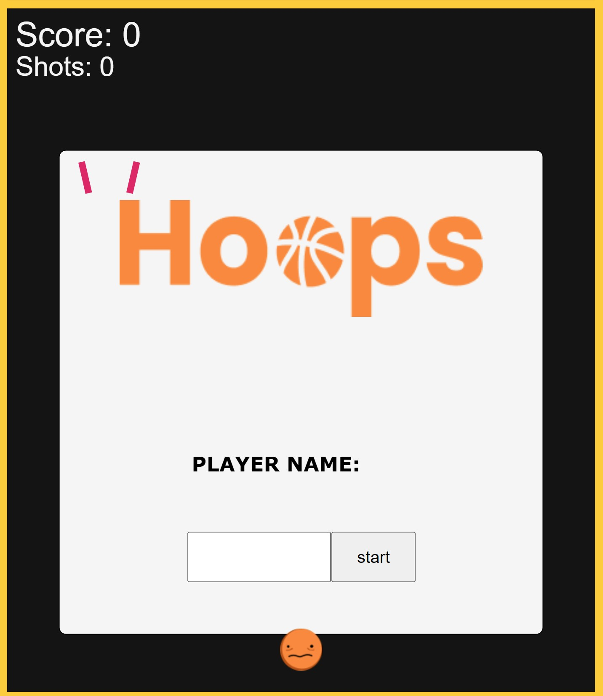

FP2: Hoops Game
Overview & Usage
For this project, I've made a game using p5js and p5play. The game is a basketball hoop shooter, where the user can click and drag the mouse to shoot a ball into a basket. This final project builds on my prototype game by adding a starting countdown, sound effects, and more polished visuals.

The game can be played here:
Hoops Final GameOr view the code here:
GitHub RepositoryDevelopment Process
I started this project by adding a 3-2-1 countdown timer just before the game starts. In addition to being fun, this also fixed an issue with the 'start' button registering as a shot taken.
Next, I added more facial expressions for the ball. Now, after the player shoots the ball, it will switch to one of three random idle faces. The ball also has a special face for when it is moving fast. I also added a title image that says "Hoops."

I then added a sound effect for the ball hitting the walls. I finished up by refining the visuals and making sure it all worked well on mobile!

Issue Deep-Dive
As I was working on the countdown screen, I had trouble getting the start screen to disappear and the countdown timer to display properly. It turned out to be a logic error with how I was switching game states and stopping the loop() function. I originally was doing the countdown with a while loop in a helper function, but this didn't let the loop() function run. Because of this, my start screen didn't go away for the countdown duration. I figured out what was happening by putting many console.log() statements in my code. I was able to fix the issue by rearranging my code and running my countdown with a conditional 'if' statement in my draw() function rather than a 'while' loop in a helper function.
Ideas and Future Work
- Add a moving basket mode
- Build a 2D platformer with the same ball character and movement
Kudos
- Using sprites with p5.play: P5.Play Documentation
- Prof Hannah's example game: GitHub Repo
- Free sound effects from Pixabay